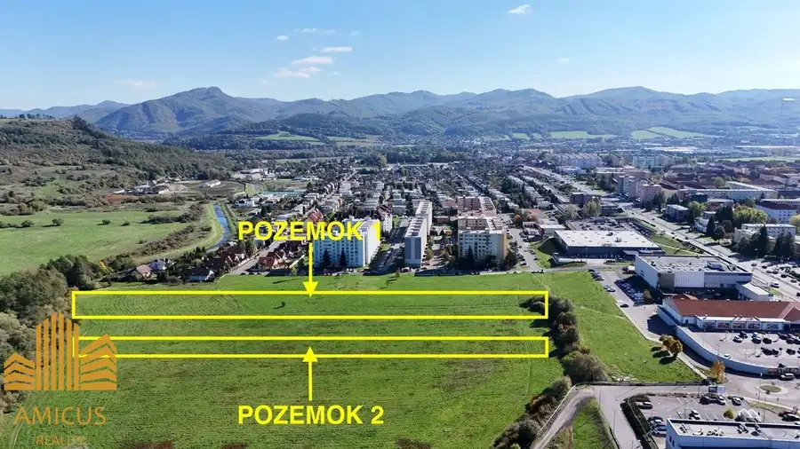
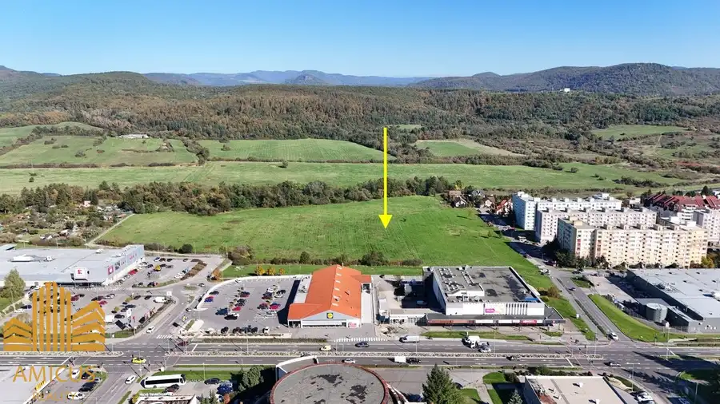
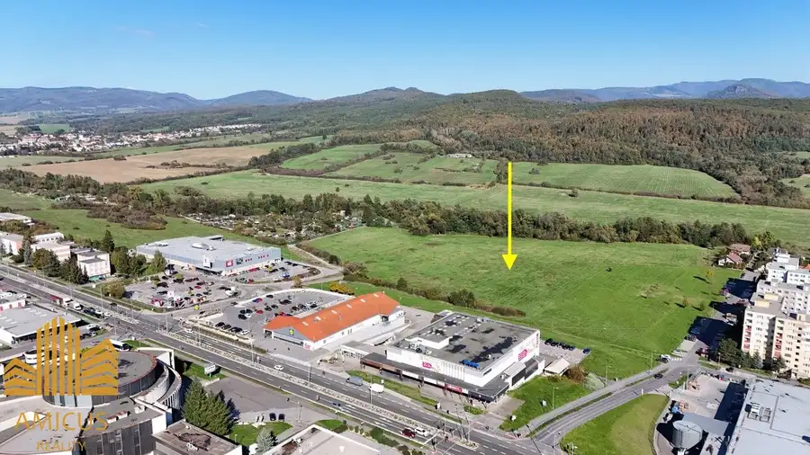
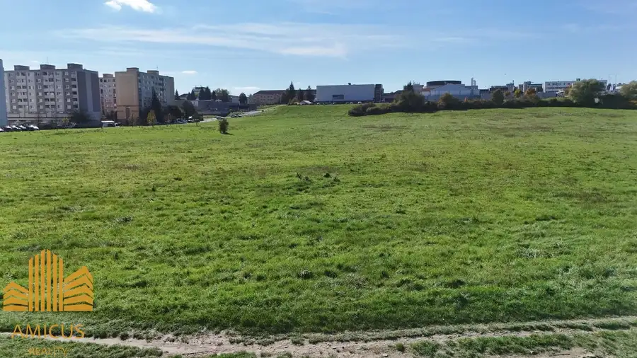

Investičné pozemky pod priorom
Žiar nad Hronom




- Plocha3388 m²
- VlastníctvoOsobné
O nehnuteľnosti
Predám spoluvlastnícky podiel o veľkosti 1/2-ica na dvoch atraktívnych pozemkoch nachádzajúcich sa priamo v intraviláne mesta Žiar nad Hronom, čo zaručuje ich výbornú dostupnosť. Pozemky majú pravidelný obdĺžnikový tvar a sú situované v rámci lokality, ktorá je určená na bývanie, s možnosťou výstavby rodinných domov. Žiar nad Hronom je mesto so všetkou potrebnou infraštruktúrou, školami, obchodmi, zdravotníckymi zariadeniami a rekreačnými možnosťami v dosahu. Výhodou je aj výborná dostupnosť hlavných dopravných ťahov, ktoré umožňujú jednoduché spojenie s okolitými mestami a oblasťami regiónu.Parametre pozemkov:•Pozemok č. 1: 4 326 m²•Pozemok č. 2: 2 451 m²•Celková výmera: 6 777 m²•Celková kúpna cena: 349 900 €•Lokalita: Žiar nad Hronom•Umiestnenie: intravilán•Tvar: obdĺžnikový•Využitie: obytné územie, plochy so zástavbou rodinných domov•Doplňujúce informácie: slnečné, rovinaté, bezproblémový prístupPozemky predstavujú vynikajúcu investičnú príležitosť v zaujímavej lokalite. Cena zahŕňa províziu realitnej kancelárie a súvisiace služby, ako je právne poradenstvo, vypracovanie rezervačných a kúpnych zmlúv, overenie podpisov u notára a správne poplatky na katastrálnom odbore. Ide o konečnú cenu.Realitná kancelária Amicus reality s.r.o.M. R. Štefánika 4Žiar nad Hronom965 01Ing. Matej Bies+421 918 623 169matej.bies@gmail.com
Parametre
- Druh
- Pozemok pre rodinné domy
- Dátum zverejnenia
- 29. 10. 2024
- Dĺžka pozemku
- 250
- Elektrina
- Pri pozemku, Pri pozemku - 230 V, Pri pozemku - 400 V
- Funkčné využitie
- Výstavba rodinného domu
- Odpadové vody
- Pri pozemku - Kanalizácia
- Plocha pozemku
- 3388 m²
- Plyn
- Pri pozemku
- Pripravenosť k výstavbe
- Schválené v územnom pláne
- Prístupová komunikácia
- Asfaltová
- Terén pozemku
- Rovinatý
- Typ
- Predaj
- Vlastníctvo
- Osobné
- Voda
- Pri pozemku
- Voľnočasové aktivity
- Rybolov, Turistika, Cykloturistika
- Územie
- Intravilán
- Šírka pozemku
- 26